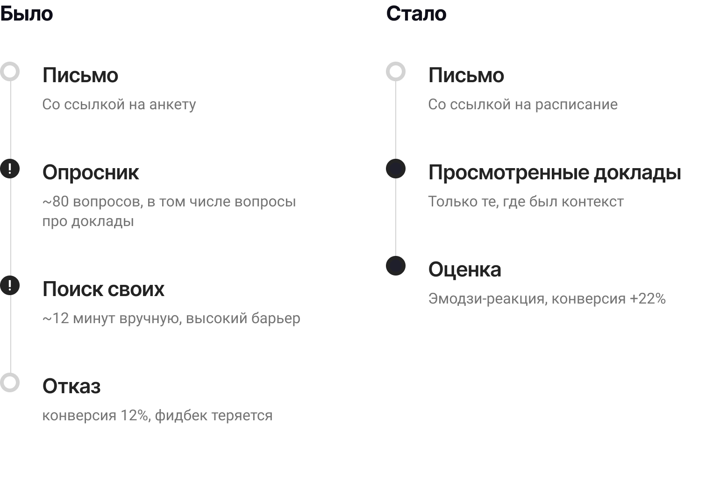
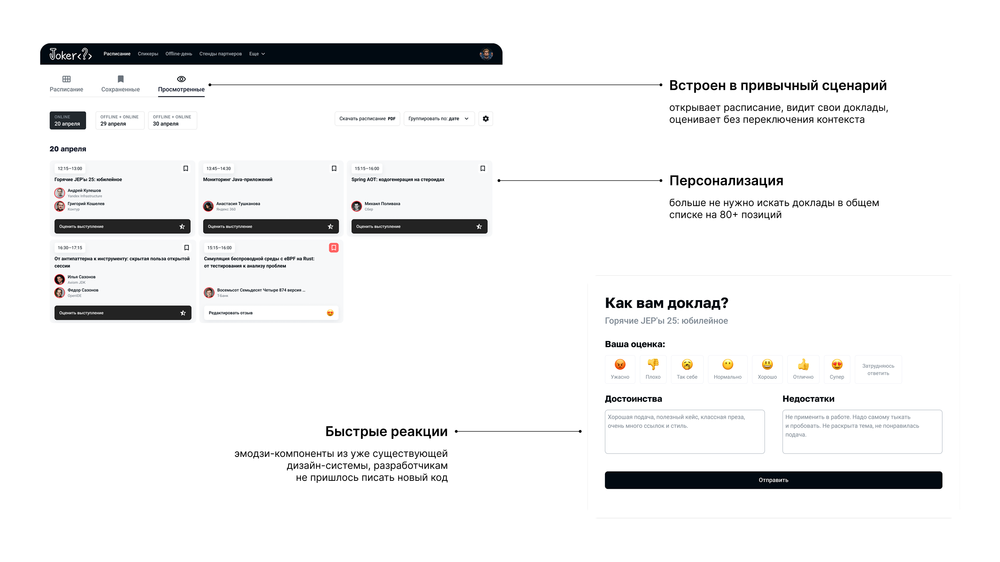

Коротко о проекте
После конференции участники получали письмо со ссылкой на оценку. Раньше она вела на общую анкету — теперь на персонализированный раздел «Просмотренные доклады» прямо в расписании.
Участник видит только те сессии, где был сам, и оценивает в один клик.


Проблема
Качество докладов — один из ключевых факторов NPS конференции. Без достоверной обратной связи программный комитет не может принимать обоснованные решения о спикерах и темах.
Существующая система сбора отзывов эту задачу не решала:
- Анкета на 80 вопросов. Участники открывали, видели объём и закрывали.
- Разрыв контекста: нужно вручную найти доклады в общем списке — высокий порог ещё до первого ответа.
- Итог: конверсия 12%, спикеры не получали фидбек.
Моя роль
Product Designer
Ключевое решение — не строить новое, а переосмыслить существующее.
- провела исследование (интервью + анализ опросов) и выявила ключевые барьеры;
- предложила решение в рамках текущей архитектуры — 3 дня разработки;
- интегрировала оценку в существующий сценарий без новых точек входа.
Исследование и работа с ограничениями
Исследование
Провела интервью с участниками и разобрала результаты прошлых опросов. Гипотеза подтвердилась: люди не отказывались от фидбека из-за лени — они отказывались из-за высокой стоимости действия. Найти нужный доклад в длинном общем списке занимало время и требовало усилий ещё до начала заполнения.
Участники не ленились давать фидбек — они просто не хотели тратить 10 минут на поиск «того самого» доклада в списке из 80 позиций.
Работа с ограничениями
До начала сезона конференций оставались недели. Команда разработки была загружена. Ограничение стало фильтром: если решение нельзя собрать из того, что уже есть — оно слишком дорогое.
Мы уложились в 3 дня именно потому, что не проектировали новое — переиспользовали текущую дизайн-систему. Эмодзи-реакции уже использовались в двух других местах платформы.

Решение
Три принципа, которые сделали это рабочим:

Выводы
Что я вынесла из этого проекта
Иногда самое сильное решение — убрать шаг, а не добавить функцию.
Рост метрик был достигнут не за счёт новых функций, а за счёт точечного изменения сценария. Перенос оценки в контекст использования убрал главный барьер — поиск — и дал компании то, чего не было раньше: стабильную обратную связь по каждому докладу.